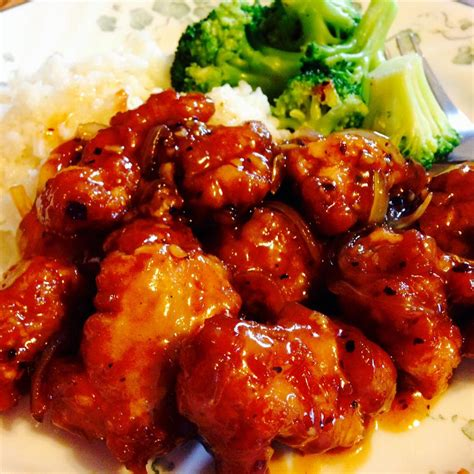

General Tso's Chicken

What is General Tso's Chicken?
General Tso’s Chicken is saucy, juicy and crispy. The signature sauce is thick and loaded with flavor. If you are a die-hard orange chicken fan, you must try this dish! Make it all in one dish in the comfort of your home for a sweet and spicy treat!
Ingredients
- 4 cups peanut oil for frying
- 2 eggs
- 1 teaspoon sesame oil
- ½ cup cornstarch
- 1 pound skinless, boneless chicken thighs, cut into bite-sized pieces
- 1 ½ tablespoons rice vinegar
- 2 tablespoons rice wine
- 3 tablespoons white sugar
- 3 tablespoons soy sauce
- 1 teaspoon sesame oil
- 1 tablespoon banana ketchup
- 2 tablespoons peanut oil
- 6 dried whole red chilies
- ½ cup diced onion
- 1 tablespoon minced garlic
- 1 tablespoon orange zest
- 2 tablespoons minced green onions
- 1 tablespoon toasted sesame seeds
Directions
- Heat 4 cups of peanut oil in a deep-fryer or large saucepan to 375 degrees F (190 degrees C)
- Beat the eggs in a mixing bowl; whisk in 1 teaspoon of sesame oil and the cornstarch. Mix in the chicken until all the pieces are coated with batter. Drop into the hot oil a piece at a time; cook until the chicken is golden brown on the outside and no longer pink on the inside, about 4 minutes. Drain on a paper towel-lined plate.
- Stir together the vinegar, wine, sugar, soy sauce, 1 teaspoon sesame oil, and the banana ketchup in a small bowl until smooth; set aside. Heat 2 tablespoons peanut oil in a wok or large skillet over high heat. Stir in the dried chile peppers and cook for a few seconds until the peppers brighten. Stir in the onion, garlic, and orange zest. Cook and stir until the onion is beginning to brown. Stir in the sauce; bring to a boil before adding the fried chicken. Reduce the heat to medium and stir until the chicken pieces are well coated with the sauce, a few minutes longer. Serve sprinkled with green onions and toasted sesame seeds.
Nutrition Facts
- 2475 Calories
- 244g Fat
- 53g Carbs
- 29g Protein